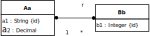
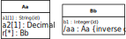
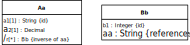
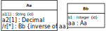
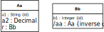

Understanding and Implementing Information Management Concepts and Techniques
JavaScript Front-End Web App Tutorial Part 5: Managing Bidirectional Associations
 Learn how to manage bidirectional associations between object types, such as the association assigning authors to their books as well as books to their authors
Learn how to manage bidirectional associations between object types, such as the association assigning authors to their books as well as books to their authors
Warning: This tutorial manuscript may still contain errors and may still be incomplete in certain respects. Please report any issue to Gerd Wagner at [email protected].
This tutorial is also available in the following formats: PDF. You may run the example app from our server, or download it as a ZIP archive file. See also our Web Engineering project page.
Copyright © 2014-2021 Gerd Wagner
This tutorial article, along with any associated source code, is licensed under The Code Project Open License (CPOL), implying that the associated code is provided "as-is", can be modified to create derivative works, can be redistributed, and can be used in commercial applications, but the article must not be distributed or republished without the author's consent.
2021-05-31
Table of Contents
- Foreword
- 1. Bidirectional Associations
- 2. Bidirectional Associations in Plain JS
List of Figures
This tutorial is Part 5 of our series of six
tutorials about model-based development of front-end web
applications with plain JavaScript. It shows how to build a web app that
takes care of the object types Author, Publisher
and Book as well as the bidirectional associations between
Book and Author and between Book
and Publisher.
The app supports the four standard data management operations (Create/Retrieve/Update/Delete). It extends the example app of part 3 by adding code for handling derived inverse reference properties. The other parts of the tutorial are:
Part 1: Building a minimal app.
Part 2: Handling constraint validation.
Part 3: Dealing with enumerations.
Part 4: Managing unidirectional associations, such as the associations between books and publishers, assigning a publisher to a book, and between books and authors, assigning authors to a book.
Part 6: Handling subtype (inheritance) relationships between object types.
You may also want to take a look at our open access book Building Front-End Web Apps with Plain JavaScript, which includes all parts of the tutorial in one document, dealing with multiple object types ("books", "publishers" and "authors") and taking care of constraint validation, enumeration attributes, associations and subtypes/inheritance.
In OO modeling and programming, a bidirectional association is an association that is represented as a pair of mutually inverse reference properties, which allow `navigation´ (object access) in both directions.
The model shown in Figure 1.1 below (about publishers, books and their authors) serves as our running example. Notice that it contains two bidirectional associations, as indicated by the ownership dots at both association ends.

For being able to easily retrieve the committees that are chaired or
co-chaired by a club member, we add two reference properties to our
Committee-ClubMember example model: the
property of a club member to be the chair of a committee
(ClubMember::chairedCommittee) and the property
of a club member to be the co-chair of a committee
(ClubMember::coChairedCommittee). We assume that
any club member may chair or co-chair at most one committee (where the
disjunction is non-exclusive). So, we get the following model:

Notice that there is a close correspondence between the two
reference properties Committee::chair and
ClubMember::chairedCommittee. They are the
inverse of each other: when the club member Tom is the chair of the
budget committee, expressed by the tuple ("budget
committee", "Tom"), then the budget committee is the committee
chaired by the club member Tom, expressed by the inverse tuple ("Tom", "budget committee"). For expressing this
inverse correspondence in the diagram, we append an inverse property
constraint, inverse of chair, in curly braces to the
declaration of the property
ClubMember::chairedCommittee, and a similar one
to the property Committee::chair, as shown in
the following diagram:

Using the reference path notation of OOP languages, with c referencing a Committee object, we
obtain the equation:
Or, the other way around, with m
referencing a ClubMember object, we obtain the
equation:
Notice that when a property p2 is the inverse of a
property p1,
this implies that, the other way around, p1 is the inverse of
p2. Therefore,
when we declare the property
ClubMember::chairedCommittee to be the inverse
of Committee::chair, then, implicitly,
Committee::chair is the inverse of
ClubMember::chairedCommittee. We therefore call
Committee::chair and
ClubMember::chairedCommittee a pair of mutually inverse reference
properties. Having such a pair in a model implies
redundancy because each of the two involved reference properties can
be derived from the other by inversion. This type of redundancy implies
data storage overhead and update overhead, which is the price to pay for
the bidirectional navigability that supports efficient object access in both
directions.
In general, a bidirectional association between the classes
A and B is represented by two reference
properties A::bbb and
B::aaa such that for any object a1
instantiating A, it holds that
a1.bbb.aaa=a1if bothA::bbbandB::aaaare single-valued,a1.bbb.aaacontainsa1ifA::bbbis single-valued andB::aaais multi-valued,for any
b1froma1.bbb,b1.aaa=a1ifA::bbbis multi-valued andB::aaais single-valued,for any
b1froma1.bbb,b1.aaacontainsa1if bothA::bbbandB::aaaare multi-valued.
For maintaining the duplicate information of a mutually inverse
reference property pair, it is common to treat one of the two involved
properties as the master, and the other
one as the slave, and take this
distinction into consideration in the code of the change methods (such as
the property setters) of the affected model classes. We indicate the slave
of an inverse reference property pair in a model diagram by declaring the
slave property to be a derived property using the UML notation of a slash (/)
as a prefix of the property name as shown in the following diagram:

The property chairedCommittee in
ClubMember is now derived
(as indicated by its slash prefix). Its annotation {inverse of
chair} defines a derivation rule
according to which it is derived by inverting the property
Committee::chair.
There are two ways how to realize the derivation of a property: it may be derived on read via a read-time computation of its value, or it may be derived on update via an update-time computation performed whenever one of the variables in the derivation expression (typically, another property) changes its value. The latter case corresponds to a materialized view in a database. While a reference property that is derived on read may not guarantee efficient navigation, because the on-read computation may create unacceptable latencies, a reference property that is derived on update does provide efficient navigation.
When we designate an inverse reference property as derived by
prefixing its name with a slash (/), we indicate that it is
derived on update. For instance, the property
/chairedCommittee in the example above is derived on update
from the property chair.
In the case of a derived reference property, we have to deal with life-cycle dependencies between the affected model classes requiring special change management mechanisms based on the functionality type of the represented association (either one-to-one, many-to-one or many-to-many).
In our example of the derived inverse reference property
ClubMember::chairedCommittee, which is
single-valued and optional, this means that
whenever a new committee object is created (with a mandatory
chairassignment), the correspondingClubMember::chairedCommitteeproperty has to be assigned accordingly;whenever the
chairproperty is updated (that is, a new chair is assigned to a committee), the correspondingClubMember::chairedCommitteeproperty has to be unset for the club member who was the previous chair and set for the one being the new chair;whenever a committee object is destroyed, the corresponding
ClubMember::chairedCommitteeproperty has to be unset.
In the case of a derived inverse reference property that is
multi-valued while its inverse base property is single-valued (like
Publisher::publishedBooks in Figure 1.2 below being
derived from Book::publisher), the life cycle
dependencies imply that
whenever a new 'base object' (such as a book) is created, the corresponding inverse property has to be updated by adding a reference to the new base object to its value set (like adding a reference to the new book object to
Publisher::publishedBooks);whenever the base property is updated (e.g., a new publisher is assigned to a book), the corresponding inverse property (in our example,
Publisher::publishedBooks) has to be updated as well by removing the old object reference from its value set and adding the new one;whenever a base object (such as a book) is destroyed, the corresponding inverse property has to be updated by removing the reference to the base object from its value set (like removing a reference to the book object to be destroyed from
Publisher::publishedBooks).
Notice that from a purely computational point of view, we are free
to choose either of the two mutually inverse reference properties (like
Book::authors and
Author::authoredBooks) to be the master.
However, in many cases, associations represent asymmetrical ontological
existence dependencies that dictate which of the two mutually inverse
reference properties is the master. For instance, the authorship
association between the classes Book and Author
represents an existential dependency of books on their authors. A book
existentially depends on its author(s), while an author does not
existentially depend on any of her books. Consequently, the corresponding
object lifecycle dependency between Book and
Author implies that their bidirectional association is
maintained by maintaining Author references in
Book::authors as the natural choice of master
property, while Author::authoredBooks is the
slave property, which is derived from
Book::authors.
Since classical OO programming languages do not support explicit associations as first class citizens, but only classes with reference properties representing implicit associations, we have to eliminate all explicit associations for obtaining an OO class model.
The starting point of our association elimination procedure is an information design model with various kinds of unidirectional and bidirectional associations, such as the model shown in Figure 1.1 above. If the model still contains any non-directed associations, we first have to turn them into directed ones by making a decision on the ownership of their ends, which is typically based on navigability requirements.
Notice that both associations in the Publisher-Book-Author information design model, publisher-publishedBooks and authoredBooks-authors (or Authorship), are bidirectional as indicated by the ownership dots at both association ends. For eliminating all explicit associations from an information design model, we have to perform the following steps:
Eliminate unidirectional associations, connecting a source with a target class, by replacing them with a reference property in the source class such that the target class is its range.
Eliminate bidirectional associations by replacing them with a pair of mutually inverse reference properties.
A unidirectional association connecting a source with a target class is replaced with a corresponding reference property in its source class having the target class as its range. Its multiplicity is the same as the multiplicity of the target association end. Its name is the name of the association end, if there is any, otherwise it is set to the name of the target class (possibly pluralized, if the reference property is multi-valued).
A bidirectional association, such as the authorship association between the classes
Book and Author in the model shown in Figure
1.1 above, is replaced with a pair of
mutually inverse reference properties, such as
Book::authors and
Author::authoredBooks. Since both reference
properties represent the same information (the same set of binary
relationships), it's an option to consider one of them being the
"master" and the other one the "slave", which is derived from the
master. We discuss the two cases of a one-to-one and a many-to-many
association
In the case of a bidirectional one-to-one association, this leads to a pair of mutually inverse single-valued reference properties, one in each of the two associated classes. Since both of them represent essentially the same information (the same collection of links/relationships), one has to choose which of them is considered the master property, such that the other one is the slave property, which is derived from the master property by inversion. In the class diagram, the slave property is designated as a derived property that is automatically updated whenever 1) a new master object is created, 2) the master reference property is updated, or 3) a master object is destroyed. This transformation is illustrated with the following example:
A bidirectional many-to-many association is mapped to a pair of mutually inverse multi-valued reference properties, one in each of the two classes participating in the association. Again, in one of the two classes, the multi-valued reference property representing the (inverse) association is designated as a derived property that is automatically updated whenever the corresponding property in the other class (where the association is maintained) is updated. This transformation is illustrated with the following example:


After replacing both bidirectional associations with reference properties, we obtain the OO class model shown in 1.2.
Since books are entities that existentially depend on authors and
possibly on publishers, and not the other way around, it's natural to
maintain the master references in book objects, and consider the inverse
references in publisher and author objects as derived (or 'slave') data.
Therefore, we define publishedBooks and
authoredBooks as derived inverse reference properties,
which is indicated by their slash prefix in the OO class model.
The meaning of this OO class model can be illustrated by a sample data population for the three model classes involved:
| Publisher | ||
|---|---|---|
| Name | Address | Published books |
| Bantam Books | New York, USA | 0553345842 |
| Basic Books | New York, USA | 0465030793 |
| Book | ||||
|---|---|---|---|---|
| ISBN | Title | Year | Authors | Publisher |
| 0553345842 | The Mind's I | 1982 | 1, 2 | Bantam Books |
| 1463794762 | The Critique of Pure Reason | 2011 | 3 | |
| 1928565379 | The Critique of Practical Reason | 2009 | 3 | |
| 0465030793 | I Am A Strange Loop | 2000 | 2 | Basic Books |
| Author | ||
|---|---|---|
| Author ID | Name | Authored books |
| 1 | Daniel Dennett | 0553345842 |
| 2 | Douglas Hofstadter | 0553345842, 0465030793 |
| 3 | Immanuel Kant | 1463794762, 1928565379 |
Notice how Book records reference
Publisher and Author records, and, vice versa,
Publisher and Author records reference
Book records.
Consider the following table pairs representing the populations of
the classes A and B where the columns
A::id and B::id are primary keys and
A::b_id and B::a_id are foreign keys
referencing B, respectively A.
In which of the following cases does the property pair
A::b_id and B::a_id implement a bidirectional
association? Select one or more:
☐
A B id b_id 1 2 2 1 3 3 id a_id 1 2 2 1 3 3 ☐
A B id b_id 1 3 2 1 3 2 id a_id 1 1 2 3 3 2 ☐
A B id b_id 1 3 2 1 3 2 id a_id 1 2 2 3 3 1 ☐
A B id b_id 1 3 2 3 3 2 id a_id 1 2 2 3 3 1
Representing a bidirectional association with a pair of mutually inverse reference properties implies (select one or many):
☐ information redundancy
☐ slower read access
☐ data storage overhead
☐ update overhead
☐ faster updates
☐ more efficient data storage requiring less memory
☐ efficient object access in both directions
Consider the following information design model with a bidirectional association between the classes Aa and Bb.
|  |
Which of the following OO class models are correct representations of this model? Select one or more:
☐
 ☐
 ☐
 ☐

A bidirectional association Committee-isChairedBy-ClubMember between the classes
Committee and ClubMember corresponds to ...
(select one or more):
☐ A pair of reference properties
Committee::chairandClubMember::chairedCommitteesuch thatCommittee::chairis the inverse ofClubMember::chairedCommitteeandClubMember::chairedCommitteeis the inverse ofCommittee::chair.☐ A pair of reference properties
Committee::chairandClubMember::chairedCommittee.☐ A pair of reference properties
Committee::chairandClubMember::chairedCommitteesuch thatCommittee::chairis the inverse ofClubMember::chairedCommittee.☐ A pair of reference properties
Committee::chairandClubMember::chairedCommitteesuch thatClubMember::chairedCommitteeis the inverse ofCommittee::chair.
Table of Contents
In this chapter, we show
how to derive a JS class model from an OO class model with derived inverse reference properties,
how to code the JS class model in the form of JS model classes,
how to write the view and controller code based on the model code.
The starting point for making our JS class model is an OO class model with derived inverse reference properties like the one discussed above, which we present here again, for convenience:
 |
Notice that the model contains two derived inverse reference
properties: Publisher::/publishedBooks and
Author::/authoredBooks. Each of them is linked
to a master property, from which it is derived. Consequently, each of them
represents a pair of mutually inverse reference properties corresponding
to a bidirectional association.
Compared to making JS class models with unidirectional associations, the only new issue is:
Add a «get» stereotype to all derived inverse reference properties, implying that they have an implicit getter, but no setter. They are programatically set whenever their inverse master reference property is updated.
This concerns the two derived inverse reference properties
Publisher::/publishedBooks and
Author::/authoredBooks. Thus, we get the
following JavaScript class model:
 |
The JS class model can be directly coded for getting the code of the model layer of our bidirectional association app.
Compared to the unidirectional association app, we have to deal with a number of new technical issues:
We define the derived inverse reference properties, like
Publisher::/publishedBooks, without a check operation and without a set operation.We also have to take care of maintaining the derived inverse reference properties by maintaining the derived (sets of) inverse references that form the (collection) value of a derived inverse reference property. This requires in particular that
whenever the value of a single-valued master reference property is initialized or updated with the help of a setter (such as assigning a reference to a
Publisherinstanceptob.publisherfor aBookinstanceb), an inverse reference has to be assigned (or added) to the corresponding value (set) of the derived inverse reference property (such as addingbtop.publishedBooks); when the value of the master reference property is updated and the derived inverse reference property is multi-valued, then the obsolete inverse reference to the previous value of the single-valued master reference property has to be deleted;whenever the value of an optional single-valued master reference property is unset (e.g. by assigning
nulltob.publisherfor aBookinstanceb), the inverse reference has to be removed from the corresponding value of the derived inverse reference property (such as removingbfromp.publishedBooks), if the derived inverse reference property is multi-valued, otherwise the corresponding value of the derived inverse reference property has to be unset or updated;whenever a reference is added to the value of a multi-valued master reference property with the help of an add method (such as adding an
Authorreferenceatob.authorsfor aBookinstanceb), an inverse reference has to be assigned or added to the corresponding value of the derived inverse reference property (such as addingbtoa.authoredBooks);whenever a reference is removed from the value of a multi-valued master reference property with the help of a
removemethod (such as removing a reference to anAuthorinstanceafromb.authorsfor aBookinstanceb), the inverse reference has to be removed from the corresponding value of the derived inverse reference property (such as removingbfroma.authoredBooks), if the derived inverse reference property is multi-valued, otherwise the corresponding value of the derived inverse reference property has to be unset or updated;whenever an object with a single reference or with multiple references as the value of a master reference property is destroyed (e.g., when a
Bookinstancebwith a single referenceb.publisherto aPublisherinstancepis destroyed), the derived inverse references have to be removed first (e.g., by removingbfromp.publishedBooks).
Notice that when a new object is created with a single reference or with multiple references as the value of a master reference property (e.g., a new
Bookinstancebwith a single referenceb.publisher), its setter or add method will be invoked and will take care of creating the derived inverse references.
Code each class of the JS class model as an ES6 class with implicit getters and setters:
Code the property checks in the form of class-level ('static') methods. Take care that all constraints of a property as specified in the JS class model are properly coded in the property checks.
For each single-valued property, code the specified getter and setter:
In each setter, the corresponding property check is invoked and the property is only set/unset, if the check does not detect any constraint violation.
If the concerned property is the inverse of a derived reference property (representing a bidirectional association), make sure that the setter also assigns/unsets (or adds/removes) the corresponding inverse reference to/from (the collection value of) the inverse property.
For each multi-valued property, code its add and remove operations, as well as the specified get/set operations:
Code the add/remove operations as (instance-level) methods that invoke the corresponding property checks.
Code the setter such that it invokes the add operation for each item of the collection to be assigned.
If the concerned property is the inverse of a derived reference property (representing a bidirectional association), make sure that the add/remove methods also assign/unset (or add/remove) the corresponding inverse reference to/from (the collection value of) the inverse property.
Write the code of the serialization functions
toString()andtoJSON(). In the object-to-storage conversion of a publisher or author object withtoJSON(), the derived propertiespublishedBooksandauthoredBooksare not included since their information is redundant (they are derived from thepublisherandauthorsproperties of books).Take care of deletion dependencies in the
destroymethod. Make sure that when an object with a single reference (or with multiple references) as the value of a master reference property is destroyed, all referenced objects are destroyed as well or their (derived) inverse references are unset (or removed) first.
These steps are discussed in more detail in the following sections.
For instance, the Publisher class from the JS class
model is coded in the following way:
class Publisher { constructor ({name, address}) { this.name = name; this.address = address; // derived inverse reference property (inverse of Book::publisher) this._publishedBooks = {}; // initialize as an empty map } get name() {...} static checkName( n) {...} static checkNameAsId( n) {...} static checkNameAsIdRef( n) {...} set name( n) {...} get address() {...} static checkAddress( a) {...} set address( a) {...} get publishedBooks() {...} toString() {...} toJSON() {...} }
Notice that the (derived) multi-valued reference property
publishedBooks has no setter method and is not assigned in
the constructor function because it is a read-only property that is
assigned implicitly when its inverse master reference property
Book::publisher is assigned.
Any setter for a reference property that is coupled to a derived
inverse reference property (implementing a bidirectional association),
now also needs to assign (or add/remove) inverse references to (or from)
the corresponding (collection) value of the inverse reference property.
An example of such a setter is publisher in the
Book class:
set publisher( p) { if (!p) { // the publisher reference is to be deleted/unset // delete the inverse reference in Publisher::publishedBooks delete this._publisher.publishedBooks[ this._isbn]; // unset the publisher property delete this._publisher; } else { // p can be an ID reference or an object reference const publisher_id = (typeof p !== "object") ? p : p.name; const constraintViolation = Book.checkPublisher( publisher_id); if (constraintViolation instanceof NoConstraintViolation) { if (this._publisher) { // delete the inverse reference in Publisher::publishedBooks delete this._publisher.publishedBooks[this._isbn]; } // create the new publisher reference this._publisher = Publisher.instances[ publisher_id]; // add the new inverse reference to Publisher::publishedBooks this._publisher.publishedBooks[this._isbn] = this; } else { throw constraintViolation; } } }
For any multi-valued reference property that is coupled to a derived inverse reference property, both the add and the remove method also have to assign/add/remove corresponding references to/from (the value set of) the inverse property.
For instance, for the multi-valued reference property
Book::authors that is coupled to the derived
inverse reference property
Author::authoredBooks for implementing the
bidirectional authorship association between Book and
Author, the Book::addAuthor
method is coded in the following way:
addAuthor( a) { // a can be an ID reference or an object reference const author_id = (typeof a !== "object") ? parseInt(a) : a.authorId; const validationResult = Book.checkAuthor( author_id); if (author_id && validationResult instanceof NoConstraintViolation) { // add the new author reference this._authors[author_id] = Author.instances[author_id]; // automatically add the derived inverse reference this._authors[author_id].authoredBooks[this._isbn] = this; } else { throw validationResult; } }
For the remove operation removeAuthor we obtain the
following code:
removeAuthor( a) { // a can be an ID reference or an object reference const author_id = (typeof a !== "object") ? parseInt(a) : a.authorId; const validationResult = Book.checkAuthor( author_id); if (validationResult instanceof NoConstraintViolation) { // automatically delete the derived inverse reference delete this._authors[author_id].authoredBooks[this._isbn]; // delete the author reference delete this._authors[author_id]; } else { throw validationResult; } }
In the object-to-storage conversion of a publisher or author
object with toJSON(), the derived properties
Publisher::publishedBooks and
Author::authoredBooks are not included since
their information is redundant (derived from the
Book::publisher and
Book::authors properties). For instance, the
Author::toJSON function is coded in the
following way:
toJSON() { var rec = {}; // loop over all Author properties for (const p of Object.keys( this)) { // keep underscore-prefixed properties except "_authoredBooks" if (p.charAt(0) === "_" && p !== "_authoredBooks") { // remove underscore prefix rec[p.substr(1)] = this[p]; } }; return rec; }
When a Book instance b, with a single
reference b.publisher to a Publisher instance
p and multiple references b.authors to
Author instances, is destroyed, depending on the chosen
deletion policy (1) CASCADE or (2) DROP-REFERENCES, (1) the dependent
Publisher instance and Author instances have
to be deleted first or (2) the derived inverse references have to be
removed first (e.g., by removing b from
p.publishedBooks). We assume Existential Independence for
both associated object types and, consequently, implement the
DROP-REFERENCES policy:
Book.destroy = function (isbn) { const book = Book.instances[isbn]; if (book) { console.log( book.toString() + " deleted!"); if (book.publisher) { // remove inverse reference from book.publisher delete book.publisher.publishedBooks[isbn]; } // remove inverse references from all book.authors for (const authorID of Object.keys( book.authors)) { delete book.authors[authorID].authoredBooks[isbn]; } // finally, delete book from Book.instances delete Book.instances[isbn]; } else { console.log(`There is no book with ISBN ${isbn} in the database!`); } };
In the UI code we can now exploit the inverse reference properties for more efficiently creating a list of inversely associated objects in the Retrieve/List All use case. For instance, we can more efficiently create a list of all published books for each publisher. However, we do not allow updating the set of inversely associated objects in the update object use case (e.g., updating the set of published books in the update publisher use case). Rather, such an update has to be done via updating the master objects (in our example, the books) concerned.
For showing information about published books in the Retrieve/List All publishers use case, we can
now exploit the derived inverse reference property
publishedBooks:
const tableBodyEl = document.querySelector("section#Publisher-R > table > tbody");
tableBodyEl.innerHTML = "";
for (const key of Object.keys( Publisher.instances)) {
const publisher = Publisher.instances[key];
const row = tableBodyEl.insertRow();
// create list of books published by this publisher
const publBooksListEl = createListFromMap( publisher.publishedBooks, "title");
row.insertCell().textContent = publisher.name;
row.insertCell().textContent = publisher.address;
row.insertCell().appendChild( publBooksListEl);
}Questions 1-3 are based on the following OO class model:
 |
The following addMember methods are supposed to be
part of the JS class that implements the Committee class
from the above class model. Which of the following methods is correct?
Select one:
O
class Committee { ... addMember( m) { this._members[m.memberNo] = m; m.committes[this._name] = this; } ... }O
class Committee { ... addMember( m) { this._members[m.name] = m; m.committes[this._name] = this; } ... }O
class Committee { ... addMember( m) { this._members[m.memberNo] = m; m.committes[this._name] = m.chairedCommittee; } ... }
Maintaining the derived set of inverse references that form the
collection value of the derived inverse reference property
ClubMember::committees requires that ...
(select one or more):
☐ Whenever a
ClubMemberobject referencemis added to the collection valuec.membersof aCommitteeobjectc(with the help of theaddMembermethod), also the inverse object referencechas to be added tom.committees.☐ Whenever a
ClubMemberobject referencemis removed from the collection valuec.membersof aCommitteeobjectc(with the help of theremoveMembermethod), also the inverse object referencechas to be removed fromm.committees.☐ Whenever a
Committeeobjectc(with multipleClubMemberobject referencesc.members) is destroyed, allClubMemberobjectsmwhere the collection valuem.committeescontains m have to be destroyed as well, or, alternatively, c has to be removed from the collection valuesm.committeesfor allClubMemberobjectsm.☐ Whenever a new
Committeeobjectcis created with a set ofClubMemberobject referencesmembersas the value to be assigned toc.members,chas to be added tom.committeesfor allClubMemberobjectsmfrommembers.


This project is based on the information design model below. The app
from the previous assignment is to be extended by adding derived inverse reference
properties for implementing the bidirectional
associations. This is achieved by adding the multi-valued reference
properties directedMovies and playedMovies to
the model class Person, both with range
Movie.
This project includes the following tasks:
Make an OO design model derived from the given information design model.
Make a JavaScript class model derived from the OO class model.
Code your JS class model, following the guidelines of the tutorial.
You can use the following sample data for testing your app:
Table 2.1. Movies
| Movie ID | Title | Release date | Director | Actors |
|---|---|---|---|---|
| 1 | Pulp Fiction | 1994-05-12 | 1 | 5, 6 |
| 2 | Star Wars | 1977-05-25 | 2 | 7, 8 |
| 3 | Inglourious Basterds | 2009-05-20 | 1 | 9, 1 |
| 4 | The Godfather | 1972-03-15 | 4 | 11, 12 |
Table 2.2. People
| Person ID | Name | Directed movies | Played movies |
|---|---|---|---|
| 1 | Quentin Tarantino | 1, 3 | 3 |
| 2 | George Lucas | 2 | |
| 4 | Francis Ford Coppola | 4 | |
| 5 | Uma Thurman | 1 | |
| 6 | John Travolta | 1 | |
| 7 | Ewan McGregor | 2 | |
| 8 | Natalie Portman | 2 | |
| 9 | Brad Pitt | 3 | |
| 11 | Marlon Brando | 4 | |
| 12 | Al Pacino | 4 |
Make sure that your pages comply with the XML syntax of HTML5, and that your JavaScript code complies with our Coding Guidelines and is checked with JSHint.